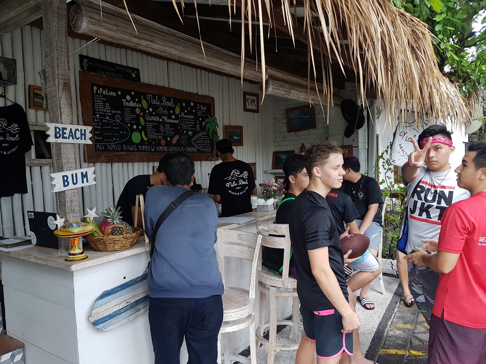
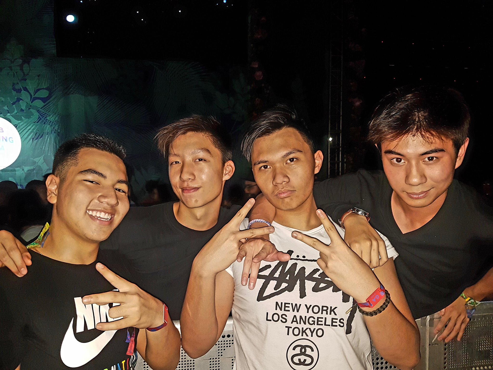
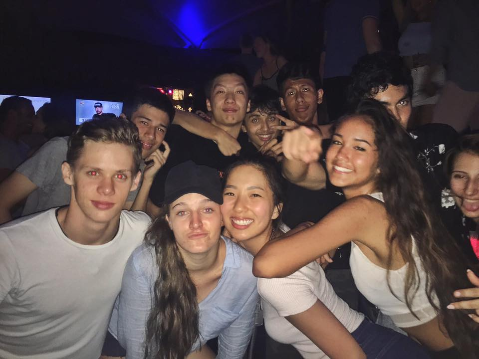
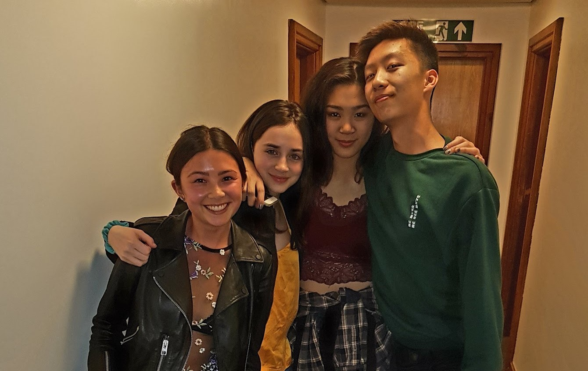
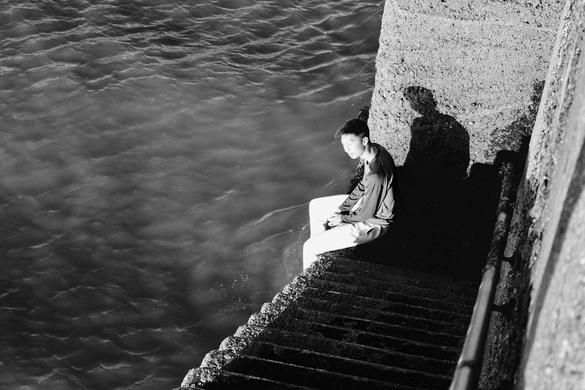
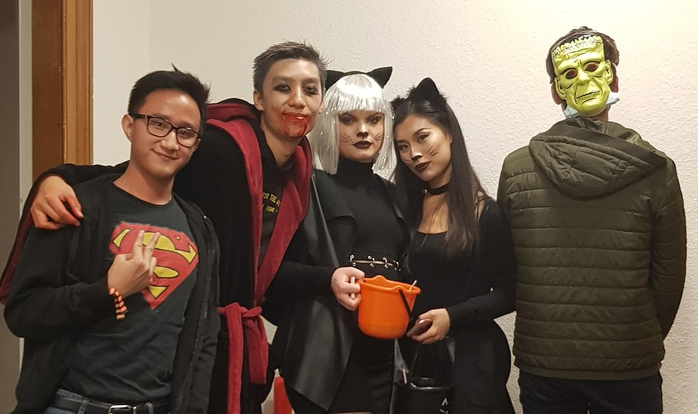
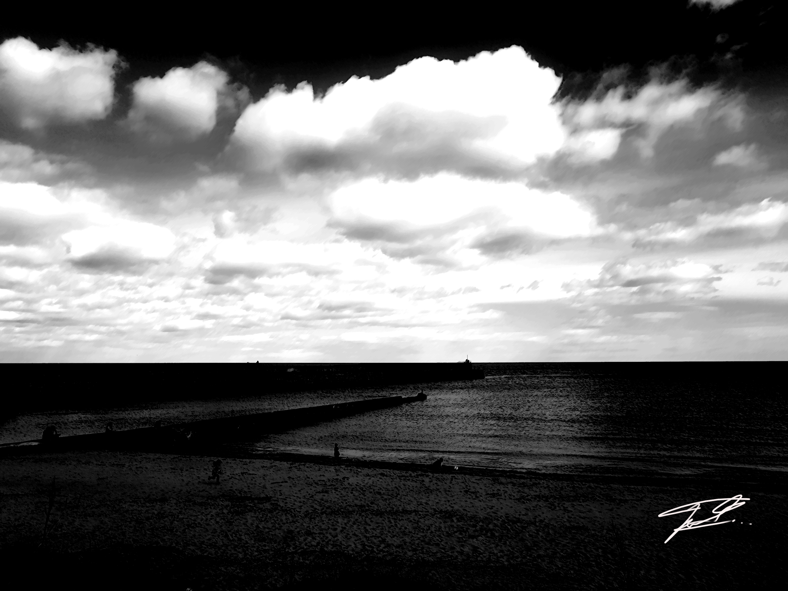

As my First Year at St Andrews comes to a close, there are many nitty details and large events that I would like to discuss and reflect. Mainly how my St Andrews first year experience turned out, completely against my expectation. There are so many ways to write up this article but I believe forking the experience into chunks of wild events and turnarounds is the easiest way to do so.
Pre University
Being the excited high school graduate I was, I heard many stories regarding university experiences from my older friends. Their responses were heavily mixed. Some friends claimed to have had the best year of their life at their first year of University, whereas other have muttered their hatred and undesirableness that was brought upon them during their first year. Hence, coming to St Andrews, I genuinely had no idea what to expect. St Andrews being at the coast of Fife, meant that I had to pit stop at Edinburgh before I was able to make the trip to St Andrews. I had brought two full suitcases of clothes and belongings whilst travelling with my mother from Jakarta. Aside from the horrific flight time, the journey was enticing. Just imagining the different possibilities that I may experience during my first month was already pestering me and my sleep on the 15 hour flight.
The dreams of yesterday are the hopes of today and the reality of tomorrow. Science has not yet mastered prophecy. We predict too much for the next year and yet far too little for the next ten. Casual eats during Bali Grad Trip
Before the semester started, many people had a faint idea regarding who were the future first years at St. Andrews, thanks to the “St Andrews Class of 2021” Facebook group created months before. I joined a few chat groups (mainly people from my course and meme heavy folks) and casually added some folks on Instagram and snapchat, despite having yet to meet them in real life. Typically, the group chats began firing away. Thus leading to muting all the group chats without giving any thought to them. Whilst I was enjoying my last summer with all of my high school mates still together in one place, it suddenly occurred to me that some people in these group chats seemed desperate and dying to meet their new peers at university. Usually, people would classify these lot as “eager and sociable people” that want to greet as many people as they can once they’ve reached St Andrews. I on the other hand, interpreted this from a radically different perspective.
 Enjoying the final moments of High School summer at the WeTheFest music festival.I was slightly perplexed at some people’s excessive attentiveness to these group chats, months before the term actually started. From my perspective, I had nothing to contribute to these chats due to my primary attention being directed towards having fun with my high school mates back home. Throughout the summer, I had travelled with my year group to Bali, went to music festivals and cherished every moment that I had still, before people began vanishing off to university one by one. It wasn’t until 2-3 weeks before the term actually started was when I began reading through these group chats. It caught my attention that some people have already made a name for themselves throughout these groups. I would casually post something strange or funny onto the group chat just to feel like I contribute to something, rather than being a ghost viewer. Interestingly enough, my every now and then casual posts were enough to get me invited into a “meme elite group”. I initially was sort of against the idea, however once I saw the list of people linked with the group chat, I was then inclined to stay. St Andrews has a mentor mentee program where first year students are able to connect with third year students, should the first year students have any question about university life. Honorable mention to Troy Takemori, my mentor and a good friend.
 Final Night of my Graduation Trip to BaliZooming forward to back in Edinburgh, the nerves were beginning to build up. It wasn’t as much of ‘what if I don't make any friends or don’t fit in’ but rather ‘what kind of person am I going to become by the end of first year?’. I knew well enough that the personality that people put up on social media can be radically different to what they’re like during a physical social interaction.
This ended up being exactly the case, two well-known names that were forming during the group chats suddenly vanished once university began. From being at the center of social talk to being nothing more than recalls of dust. It was as if they’d put on a permanent invisibility cloak once they had entered university for real. Every now and then, someone would bring up the old group chats, usually saying ‘Hey, remember those group chats before the beginning of semester 1? I never ended up meeting anybody from those chats since coming here…’.
Fresher's Week (Orientation Week)
This week is always a wildcard for everyone. This is the time where you randomly pick a couple of mates and create this superficial friend group. For me, everyone in my so called ‘elite meme’ group chat was anticipating everyone’s arrival. Wanting to meet everyone as soon as everyone set foot in St Andrews. As for me, I ended up not meeting them until later during a night out. Being with my mother for an extra couple of hours, we decided to set up my new dorm room and buy additional equipment at the nearby Morrisons. I met one of my flat mates, who I would barely see throughout the year but stay as good friends nevertheless, and crafted our general small talk. Our mothers got to talk to each other as well which made the initial awkward process more bearable.
Towards later during the evening, a dinner was held for everyone at my hall. My hall is split into apartment buildings so it feels more like an apartment complex rather than a university hall. I got to meet some initial freshers during the dinner, one of which who I remain in good contact with, and was overall feeling a positive vibe about the university.
Keep in mind that quite a few of the people I met in freshers week and even throughout semester 1 and 2 ended up being one night meet and greets and never saw again. It's a recurring theme really. Bound to happen.
Coming from Jakarta, and recently recovering from an amazing trip at Bali, my expectations for the clubbing and nightlife scene were sky high. I couldn’t wait to get drinking and feel solid about being a legal citizen (18 years of age) eligible for alcohol. However, I quickly came to realize that my expectations were on such opposite ends of the spectrum, it was as if I was expecting a rock to outrun Usain Bolt in a running race. But that didn’t matter at that night, I was happy that I was able to socialize and meet many of my fellow peers.
Despite what most people say, I think freshers week is still a great time to meet good people. A few of my friends were people I actually met on my first few nights at St Andrews.
Throughout the middle of the night, I stumbled into the meme group and somehow, everyone already instantly knew who I was. It was almost as if everyone did a background check on everyone way before coming to St Andrews. We got together as if we were friends for a long time and headed out to chill someplace else.
Despite the very friendly first few days at St Andrews, I knew it wasn’t going to last very long. In fact, during my very first encounter, they were already talking behind people’s backs which I found absolutely Ludacris. Without going into much detail, and frankly so much happened in one week I wasn’t even sure if what I heard was the truth or not, drama and disruption of friend groups erupted. One attention seeker was causing many problems for everyone in the group, eventually splitting the group in half. I was initially on one half of the group but ended up migrating to the other half quickly afterwards (who ended up becoming one of my closest friends). It was crazy, by the end of freshers week, the so called elite meme group was no more and everyone had parted. Thankfully for me, I managed to meet many peers during freshers week so I wasn’t exactly bothered by it too much.
If it’s one hint I can give to anyone, it’s please don’t base your friend group on the first group of friends you make. It’s incredible how many two faced attention seeking maniacs are willing to do anything to get on someone’s good side.
Semester 1
Classically, Semester 1 for first years is directed towards fitting in and feeling comfortable with the university, whilst preserving high excellence of academia (hopefully). St Andrews has a fathom for long lasting traditions and fun events that are only unique to St Andrews. The first and foremost tradition that any fresher should really be opting for is the joining of an academic family. Throughout freshers week, third year (academically) married couples will be searching around asking anyone in first year if they’d like to be adopted. What ends up happening is that you end up being in a long line of academic family heritage. Once you are adopted, you automatically by family tree logic have an academic aunt, uncle, grandparents, cousins etc. The academic family scene is really treated with respect which is really unique to the culture here in St Andrews. I found my academic parents after being linked with people from a few folks.
Whilst engaged in the traditions of St Andrews, I also began marking my place in the Badminton Club. Being an avid and decent player, I thought I would try out for the team. Unfortunately, I was unluckily enough to be paired with a beginner in doubles against ex-team members. The result wasn't that fantastic, leading to my inevitable failure. However, despite this I still played in every social sessions throughout the weeks. Over time, the other team players could see that I was decent. This led to me playing unofficially in the badminton team for a few games throughout the academic year.
 A portion of the badminton team going out together for the annual sports ball.
A portion of the badminton team going out together for the annual sports ball.
With regards to academia, there isn’t too much to say other than it wasn't the most challenging of subjects. Granted, it is first year and the courses are branded with the purpose of giving an insight and a ‘scratching the surface’ outlook over the entire subject. My grades were quite consistent throughout the year so I won’t go into detail until much later.
St Andrews, known for its reputation of Prince William and Kate Middleton, has a weak night life. This has its own perks and drawbacks. The obvious drawbacks being that the places to go out on a Friday night are extremely limited. However, this also has a beneficial counter effect to this. Because everyone generally goes to 1 or 2 places for a Friday night out, it is almost guaranteed that you will meet everyone in the Student Union or the club. In my opinion, that was a really big perk because that’s how I managed to talk and build connections with more and more people. It was from these nights out where I was able to develop many friend groups outside my hall. If you ask me what determines a good night time in St Andrews, I would look towards the pre drinking and the journey to the Student Union. Pre drinking with friends becomes a must and essentially becomes the main component of your Friday night out. Drinks being inflated at the bar means that everyone attempts to drink as much as they can before they can get to the Student Union. (But look, or at least act, sober enough so the security guards let you through)
Towards the end of first semester, I was beginning to develop a name for myself for being upmost crazy and batshit insane when I get drunk. Many snap stories have revolved around my mischievous doing, and frankly to say, I genuinely don’t mind.
 Casual photo take with friends before heading off to the Student Union.Raisin weekend is one of the most, if not the most, anticipated event of Semester 1. This event revolves around meeting with your academic family, and having your mother and father get you extremely drunk and do all sorts of goofy activities. The event lasts the entirety of Sunday which is then followed by a foam fight the next day. (People fight each other with shaving cream foam) it could take me pages and pages to describe how I was feeling during Raisin weekend, but pictures tell a thousand words so have a look!
 The calm before the storm (getting wasted during the morning) and losing my only footwear for the whole day.The most tragic event that I had participated in Semester 1 was an event named "House of Horror". There was nothing wrong with the event itself, rather my physical state was in absolute shambles. The event was basically an extremely glorified St Andrews Halloween party, inclusive of theme park rides and Halloween drinks. I had some friends come over to my flat to start pre-pre-drinking (pre drinking the pre drinking) to get ourselves riled up first. Being the cocky individual that I was, I was insisting the two others that were with me to drink a lot. Whilst they were smart enough to conserve their alcohol tolerance reserves till the actual party, I pretty much downed about 8 shots of gin accompanied with a few extra shots of Jack Daniels Whiskey. Things were feeling great right up to the point of midway though the actual pre drink event, being with more people I somehow managed to finish almost one bottle of Whiskey on my own which made me realize what a terrible mistake I had done. Hopping onto the bus to the actual Halloween venue, the bus was beginning to feel rather shaky. Feeling as If I was going to get thrown out of the universe, I started to chunder slightly. I managed to survive the bus ride (BARELY) and reached the venue. I managed to make one full rotation of the venue, just looking around, before coming to a collapsing point at the entrance.
 A photo capturing the essence of halloween before it all went downhill.Throughout the entire night, because of my costume, people thought I was a prop for the party due to my exhibited lifelessness (according to many sources). Many people came up to me, mostly friends, asking if I was alright. Unconsciously responding to "I'm fine" to every question made me almost faint and before I knew it, I was on a stretcher. "There was no way I'm leaving this place on a stretcher" I figured so tried as hard as I could to act reasonably sober for approximately 30 seconds, explaining to the medics and police that I was just feeling light headed. Thankfully, one of my other friends noticed that I really was not okay and decided to call a taxi for me.
Once we got on the taxi, again insinuating the feeling of death and universe warping, I managed to reach my destination. One very clear memory I have from this event was what happened right after I got off the taxi. One of my other friends noticed me getting of the taxi and rushed to ask me how the party was going. I immediately responded by running and throwing up all over the flowerbed outside my hall. :D
 To go places and do things that have never been done before – that’s what living is all about.Space, the final frontier. These are the voyages of the Starship Enterprise. Its five-year mission: to explore strange new worlds, to seek out new life and new civilizations, to boldly go where no man has gone before.
As I stand out here in the wonders of the unknown at Hadley, I sort of realize there’s a fundamental truth to our nature, Man must explore, and this is exploration at its greatest.